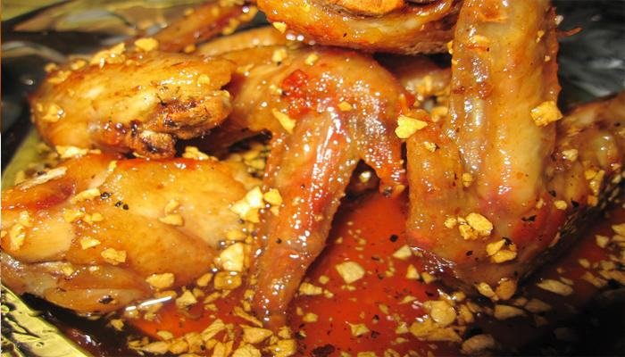

Cùng bắt tay làm thử thôi nào!
Vật Liệu: Thành phần: (cho bốn người ăn)
- 1/2 lb xà lách (mixed Spring Lettuce)
- 2 quả cà chua (roman tomatoes)
- Goat cheese
- 1.2 lb ức gà!
- 3-4 tép tỏi (đâm nhuyễn)
- 1/2 cúp húng quế (thái nhuyễn)
- 1/2 quả chanh vàng
- 1 tsp seasoned salt
- 1/2 bột tiêu trắng
- 2 Tsps Basalmic Vinegar
- 3 Tsps Olive oil
Cách Làm:
* Ngâm xà lách (loại trộn sẵn mà mí chợ Costco hoặc QFC đều có bán) ngâm sẵn trong nước thật lạnh cùng mấy quả cà!
* Ức gà nên thái làm đôi xong dùng dao béo thái ngang (butterfly) hai phần ức (thế 1 ức gà trở thành 4 miếng steak gà) ... có thể dùng giấy nylon (saran wrap) lót và dùng cán dao lớn đập xuống cho mỏng đều (cỡ 1/4" dày là đạt)! Trộn 1 Tsp dầu olive chung với 2/3 phần tỏi bằm + húng quế và nước của 1/2 quả chanh vàng để sẵn! Rắc lên mỗi lát gà ít bột tiêu trắng + muối pha (seasoned salt) xong dùng phần dầu pha sẵn (olive oil + garlic + basil leave + lemon juice) trét lên để ướp 4 lát thịt gà cỡ 5 phút!
* Dùng chảo non-stick, cho vào 1 thìa dầu ăn, dầu nóng cho 2 lát thịt gà và chiên (chiên ở high heat khoảng 4 phút mỗi mặt là đủ chín) nếu có chảo lớn thì có thể cho cả 4 lát thịt vào chiên một lúc
* Pha 2 thìa basalmic vinegar + 2 thìa dầu olive + 1/3 phần tỏi bằm + chút xíu seasoned salt và tiêu bột... dùng nĩa khuấy đều để sẵn (làm dressing)!
* Thái 2 quả cà chua (cỡ 6 lát mỗi quả).
* Vớt rau và xếp lên đĩa, viềng mấy lát cà chua lên phần đầu... rưới lên ít dressing xong rắc lên ít cheese goat... Cho mỗi đĩa một lát thịt gà rán... Còn một góc đĩa thì cho chén cơm nhỏ vào... thế là xong một đĩa gà steak mà có rau xà lách.